Executive summary
Hotels can collect guest preferences without consistently turning them into useful service at the next encounter. This project investigates how luxury-hotel staff could capture, share, and retrieve relevant guest context during the same stay, particularly when a first-time guest has little prior service history. The initial application is food-and-drink service in a club lounge. The intended value is continuity between employees: something a guest tells one employee becomes available to the next, at a suitable moment.
Semester 1 produced a working smart-glasses recognition-and-display prototype, a separate lounge-services scaffold, early preference-extraction experiments, and formative testing. The Rokid application tracks faces locally, sends a selected face crop to a laptop for recognition, and displays a recognised name with one or two fictional preference/allergy cues. A temple tap activates the session; 15 seconds without detected speech ends it. Automatic conversation-to-profile updating and contextual cue selection remain development tasks. P1, P3
Four documented successful warm rendering samples averaged 1.18 seconds from handled temple tap to Android frame commit. The speaker script gives a 1.5-second cue target; this report defines it as a provisional p95 limit from a defined trigger to first visible output. Four successful warm samples cannot establish p95 performance and exclude failed and interrupted attempts. The supplied slide shows <1 s, so the slide and script need reconciliation. A team-confirmed 20-minute comparison reported battery-level drops of 28 versus 9 percentage points for continuous and triggered operation. In a walkthrough with 10 non-hotel participants, all described activation as easy and 70% saw potential usefulness, but incorporating cues naturally remained difficult. These findings support further development; they do not establish improved guest satisfaction, recognition accuracy, or hotel revenue. The next phase prioritises reliable extraction, relevant cues, and comparison with ordinary profile lookup using hotel staff. P1, P4, P7
1. Context, evidence, and design opportunity
1.1 From hotel performance to an actionable service problem
The presentation begins with a hotel-management concern: preserving service quality while manpower and operating costs rise. Revenue per available room, RevPAR, equals average daily rate multiplied by occupancy expressed as a fraction. Personalised service might influence guest evaluations and future choices, but many other factors affect those financial measures. Neither a working wearable nor a positive usability response demonstrates increased RevPAR. The present project therefore measures the nearer outcomes it can influence: accurate information, timely retrieval, and an appropriate service action. P1
Here, personalisation means using relevant, permitted knowledge about an individual guest to adapt an interaction or service. Recognition, context access, service adaptation, and the guest's perception of fit are separate steps. Lei et al.'s three-study investigation shows that a hotel's personalisation attempt need not be perceived as personal by its recipient. This distinction makes cue comprehension and relevance necessary evaluation outcomes alongside technical performance. R1
Medallia's study of 1,749 U.S. hotel guests found a relationship between perceived personalisation and satisfaction, with opportunities to improve ordinary interactions during a stay. Its findings are survey associations from a vendor-produced report. Piccoli, Lui, and Grün's observational hotel study also connects structured preference capture with service/value evaluations and booking-channel behaviour. These sources justify investigating continuity of guest knowledge; they do not prove that glasses cause loyalty or profit. R2, R3
1.2 What the fieldwork establishes
The team investigated hotel operations through visits and stakeholder discussions. Two documented cases are particularly useful. They describe different properties and should retain that distinction. P2
| Setting and evidence | Relevant observation | Design implication |
|---|---|---|
| Novotel Singapore on Stevens; formatted visit notes | ACDC guest profiles, pre-arrival review, role-dependent access, and memory or hardcopy aids in F&B service were described. | Test whether relevant context can be retrieved during an encounter with less searching. ACDC belongs to this Accor example. |
| PARKROYAL; visit summary and later discussion transcript | Interest in lounge guest recognition; guest information already entered into a PMS; some notes surfaced through the breakfast system, with reports as a fallback. | Build on existing information flows. Investigate where visibility, confirmation, or action still breaks down. |
| Interim presentation and walkthrough | The team described delayed manual entry, inconsistent interpretation, and difficulty referring to notes during conversation. | Treat timely capture and natural interaction as requirements, then measure them in the target workflow. |
PARKROYAL's existing PMS-to-breakfast flow is significant: the problem is more specific than an absence of guest data. The notes are qualitative evidence, not a measured incidence of missed preferences. Unclear system names and numerical claims in the noisy visit transcript require confirmation before becoming specifications.
First-time guests motivate the same-stay focus because little historical interaction data may exist. They can nevertheless supply booking details, pre-arrival preferences, requests, and conversational context. The design opportunity is to make that emerging knowledge useful during the current stay. The presentation's single-digit retention statement is stakeholder-reported; no cohort definition or retention dataset is available for analysis. P1, P2
1.3 The service opportunity
Suppose a guest says they usually drink coffee with oat milk. A later server can offer it and confirm today's choice. Past orders do not automatically establish permanent preferences; a complaint about sweetness applies to that drink, not every future beverage.
The lounge offers a bounded place to study repeated food-and-drink encounters and staff handovers. The project records permission to use PARKROYAL's lounge as a POC setting; the conditions for staff participation, live guest data, and biometric testing still need to be established. P2, P6
2. Aim, scope, and requirements
The design question is:
How might we enable luxury-hotel staff to capture, share, and access relevant guest information seamlessly, so they can deliver consistently personalised, high-quality service?
First-time guest use case. On an initial stay, staff may have little previous service history; the guest can still contribute booking, pre-arrival, or conversational information. The target is same-stay continuity, not an invented profile: capture an explicit preference during an early interaction, verify its guest and current-stay association, and make the confirmed detail available to the next employee when it fits the service task. A one-off comment must not automatically become an enduring preference. Semester 1 builds recognition, retrieval, and cue-display foundations for this handover, using a lounge encounter, demo gallery, fictional profiles, and manual activation. Production PMS integration, autonomous allergy decisions, and demonstrated service outcomes remain out of scope. P1, P3
LQA anchors the requirements in timely, natural, discreet, attentive service. In the selected PARKROYAL F&B subset, staff should greet within one minute of lounge entry and offer to take a drinks order within three minutes of seating. These are staff-action windows, not cue-processing targets. The 15-item table is a departmental subset, not a complete audit or official LQA score; LQA is distinct from hotel star classification. P8, R4
| Criterion | LQA service behaviour | Requirement and proposed measure |
|---|---|---|
| DR1 · On-time service support | Greet within 1 minute of entry; offer to take a drinks order within 3 minutes of seating. | Cue within 1.5 s at p95 from a defined trigger to first visible output; separately time entry/seating to the staff action. |
| DR3 · Glanceable interaction | Natural, friendly engagement; discreet name use. | Show a concise, relevant cue. Measure understanding, glance duration, attention shifts, and interruption. |
| DR2 · Low-effort capture | Active listening and natural engagement. | Start with one action. Measure capture time, staff actions, and conversation disruption. |
| DR4 · Preference continuity | Use confirmed preferences to personalise service. | Preserve source, time, scope, and review status; confirm guest and stay. Measure whether the approved preference reaches the next employee. |
Cross-cutting safeguards. DR5 suppresses personal cues for unknown, ambiguous, lost, or stale tracks. DR6 distinguishes preferences from allergies, minimises displayed fields, and keeps manual lookup available; allergy cues require an authoritative-record and food-safety check.
Timing note. The speaker script gives a 1.5-second engineering target; this report specifies p95 for repeatable evaluation, not as an LQA requirement. The supplied slide still prints <1 s and should be reconciled before reuse. Four successful warm frame commits averaged 1.18 s but do not establish p95 or physical lens visibility. P1, P3, P4
3. Concept generation and selection
Concept comparison uses the same first-stay scenario: one guest shares a preference early in the stay and another employee needs it later. P1
| Criterion | Phone/PMS baseline | Audio badge + earpiece | Vision-assisted smart glasses |
|---|---|---|---|
| Capture | Staff looks up a profile and types a note; familiar, but screen use may interrupt and entry may be delayed. | Push-to-talk captures speech hands-free; noise and speaker attribution need testing. | Temple-triggered audio is hands-free; the camera adds visual context but also privacy and battery costs. |
| Guest/stay link | Staff explicitly selects guest and stay; slower, but visible and correctable. | Staff still selects guest/stay in a companion interface. | Vision proposes a match and may reduce lookup; uncertain matches must reveal no profile. |
| Cue delivery | A phone profile has detail but pulls attention away from the guest. | A short earpiece cue is hands-free and potentially private; audibility and comfort need testing. | A brief in-lens cue is glanceable but may distract or affect attention. |
| Review and continuity | Manual notes depend on timely entry and next-shift retrieval. | A transcript can become a draft, but staff must correct and confirm guest/stay before saving. | Could pair association with task-ranked cues and a reviewed update; extraction and writes are not integrated. |
| Effort, privacy, fallback | No new sensors, but profile navigation adds steps; phone lookup is the baseline. | No camera, but speech capture needs consent/retention review; phone lookup remains fallback. | Camera, mic, and display add privacy, comfort, battery, and integration constraints; suppress uncertain cues and use phone/PMS. |
Smart glasses remain the prototype direction because they could combine hands-free capture, visual association, and a cue in the service moment; the comparison does not establish a winner. A camera-free glasses variant could isolate display value from vision matching. Compare all concepts with the same guest information, task, and review support, measuring association errors, time to a useful cue, comprehension, interruption, privacy, and effort. The slide's table compares complete bundles; a formal morphological chart would first list alternatives for capture, association, processing, and output.
Existing products establish substantial prior capability. Oracle OPERA Cloud documents profiles containing preferences and images. hotelkit supports guest-request assignment, escalation, and follow-up. SoftServe has demonstrated wearable AR face identification, including VIP recognition. Consequently, face recognition on glasses and shared guest records are not themselves novel. R5, R6, R7
The project's contribution is the investigation of a combined same-stay service workflow: low-effort guest-context capture, checked association, and timely presentation of a relevant cue. Its lounge proposal additionally explores an active lounge cohort bounded by entry and exit. The implemented standalone glasses demo currently recognises against its loaded gallery rather than this card-derived cohort. That distinction defines an integration milestone. P3, P6
4. System architecture and prototype development
4.1 Solution overview and staff journey
Chapter 3 selected smart glasses to combine guest recognition with information available during face-to-face service. From the employee's perspective, the concept is simple: look towards a guest, see their name and useful context, and use it to make an appropriate offer without searching a separate profile.
Figure 1 identifies the core technology. SQLite stores guest profiles and preferences; reference photos are stored separately. At startup, InsightFace buffalo_l detects and aligns reference faces, then ArcFace converts them into normalised 512-number vectors cached in RAM. A live face vector is compared with these references without reprocessing every photo. Initially, the camera would stay on continuously, capturing and analysing every frame. P3
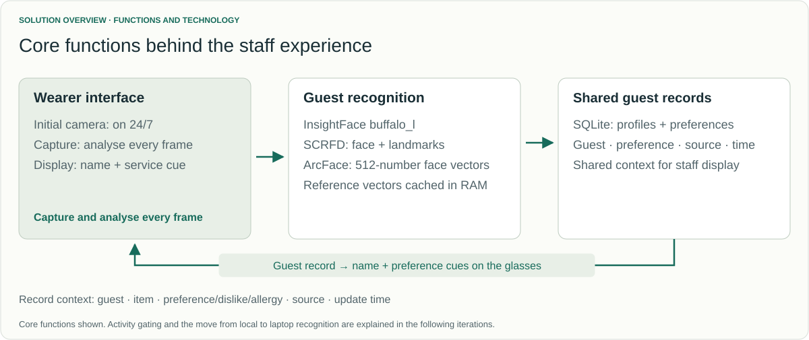
Proposed staff journey. The first staff member taps the glasses to start. A stable, unique match can surface a relevant preference or allergy cue; without one, the system shows no personal details and staff greet normally, ask the guest, or use the phone/PMS. Staff confirms today's preference in conversation. An allergy cue prompts a check against the authorised guest record and menu or kitchen source before staff explains a risk or suggests an alternative. Afterward, the system can prepare a time-stamped draft grounded in the guest's words; staff edits it, confirms the guest/current stay, and approves it. The next employee can retrieve the approved detail when relevant. This end-to-end handover remains proposed.
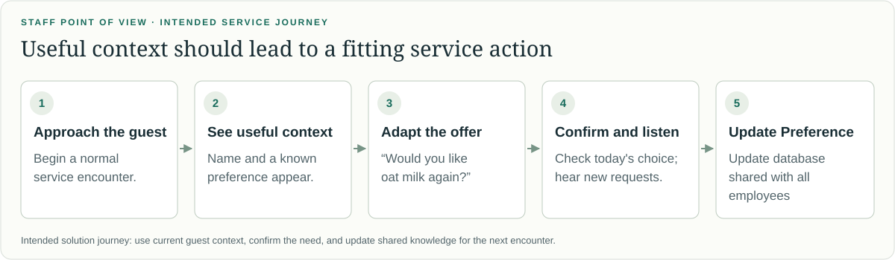
The present glasses demo covers manual activation, recognition against a loaded gallery, prepared-profile retrieval, and cue rendering. Audio capture, confirmed guest/stay association, staff-approved profile writes, next-shift retrieval, and task-ranked cue selection remain to be integrated; Chapter 5 assesses the demonstrated path.
4.2 Capture
Capture iterations use measurable tests: battery depletion, traffic, silence-timeout duration, latency, and guest facts matched against expected answers. The intended path stores an explicit, time-stamped statement as a sourced draft, associates it with a likely guest/stay, and tracks scope and review status. Staff approval is required before the shared record is updated. Display ranks checked context by location, task, urgency, and validity. Text extraction is explored separately; audio capture and reviewed updates are not integrated.
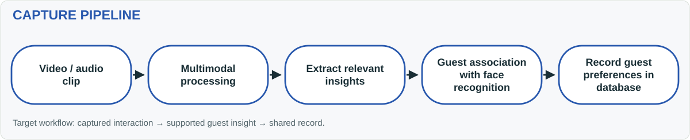
4.2.1 Temple-touch activation
Continuous capture requires less staff input but keeps processing active between encounters. Reported battery life was only slightly over an hour, insufficient for a hotel shift. Temple-touch activation trades a single tap for longer battery life. P1
The timeout balances battery use with DR2, low effort: one tap starts capture, speech sustains it, and 15 seconds without speech ends it automatically, without repeated taps or a separate stop action. Expiry stops camera/microphone activity, cancels requests, and clears cues. Speech cannot activate idle capture. P3
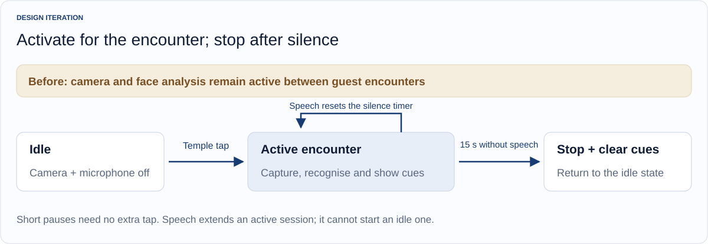
Local WebRTC voice activity detection distinguishes speech-like activity from silence. The timeout was tested and verified at approximately 15.4 seconds in a quiet-room setting; restaurant and front-desk conditions still need verification. P3
The 20-minute battery experiment used a one-minute conversation every five minutes. Including the 15-second silence period gives 75/300 seconds of scheduled activity, or 25%. P1, P7
| Activation comparison | Continuous | Temple touch + silence timeout |
|---|---|---|
| Scheduled duty cycle | 100% | 25% |
| Reported traffic count | 705 | 170 |
| Battery-level drop | 28 percentage points | 9 percentage points |
Traffic fell by 75.9%; battery depletion fell by 19 percentage points, approximately 68% relative depletion. This measures battery-gauge change, not electrical power. P1, P7
4.2.2 Selective server processing
Local photo recognition alone averaged 1,927.9 ms, numerically longer than the 1.5 s end-to-end cue objective. This component mean comes from a separate benchmark, so it is a bottleneck signal rather than a direct p95 compliance result; camera, transfer, and display add further stages. SCRFD preparation/inference/postprocessing took 1,268.7 ms, and alignment, ArcFace inference, and matching 639.1 ms, versus 20.1 ms for JPEG decoding. Recognition dominated, motivating selective offloading. P5
Camera handling, tracking, crop preparation, and rendering remain local; the laptop handles InsightFace buffalo_l recognition and lookup. Planned extraction also belongs there. This targets DR1, keeping position updates responsive. A separate battery benefit remains unmeasured. P3
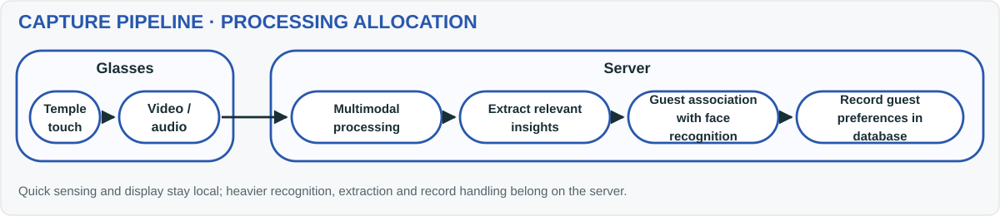
The comparison used 15 warm probes per mode, the same enrolled 800 × 800 photo, five gallery identities, CPU execution, and 0.50/0.10 score/margin settings. Offline testing disabled Wi-Fi and stopped the laptop server. P5
| Warm photo-recognition path | Mean | Median | Observed range |
|---|---|---|---|
| Glasses → Wi-Fi → laptop → parsed response | 1,350.6 ms | 1,311.6 ms | 1,220.1–1,513.7 ms |
| Entire recognition on glasses | 1,927.9 ms | 1,896.0 ms | 1,848.6–2,379.7 ms |
The offloaded mean of 1,350.6 ms is close to the 1.5-second objective, but this warm photo benchmark excludes camera, image preparation, and display, so it cannot show whether the complete-path p95 is met. Only one CPU laptop was tested; a more powerful server or accelerated inference could help. Gains require measurement alongside image-preparation and scheduling optimisation, then complete-path retesting (Section 5.2). P5
4.2.3 Independent preference-extraction testing
For DR4, preference continuity, extraction is tested separately to check accuracy before glasses integration. Current tests use written transcripts; audio transcription is not connected. P13
Three local models processed two invented, speaker-labelled conversations containing three expected guest facts. Outputs use a fixed data format (JSON) for category, value, and guest quote; automated checks compare these with the guest's words. Results remain drafts without guest-record changes. The M1 Mac results compare fact matches and runtime. P1, P13
| Reported local model | Correct JSON format | Guest facts matched | Mean time/transcript |
|---|---|---|---|
llama3.2:3b |
2/2 | 1/3 | 76.1 s |
qwen3:4b-instruct |
2/2 | 2/3 | 67.2 s |
gemma4:e2b |
2/2 | 2/3 | 86.4 s |
Qwen is the provisional best model: it tied Gemma at 2/3 facts and was fastest at 67.2 seconds. This small test cannot establish general accuracy; timing covers extraction only. P1, P13
Gemma treated “too sweet” as a preference and a dessert-safety question as dietary information, despite correct formatting. Further tests must distinguish complaints/questions from preferences, check corrections and negative statements, assign facts to the correct speaker, and repeat inputs to assess consistency. P13
After improving text-only extraction, compare it with added video of the same interactions. Measure whether visual information adds enough correct detail to justify the extra processing. Audio transcription should be evaluated separately.
4.3 Display
Display testing uses user feedback on placement, readability, and relevance. The pipeline identifies the guest, retrieves their record, and returns cues.
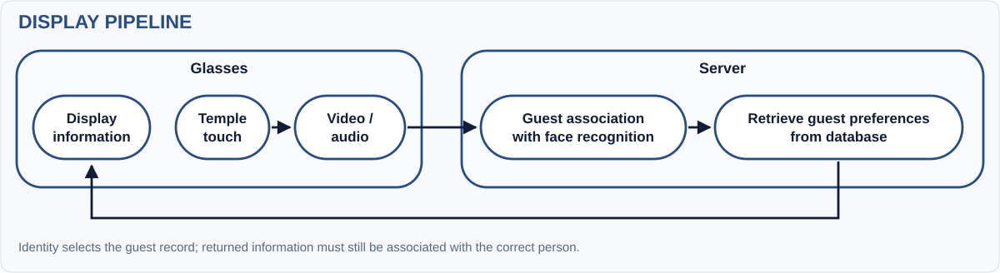
4.3.1 Positioning information beside the guest
Initially, cues occupied a fixed display position. User feedback and prototype validation prompted face-relative placement and central guest selection, aiming to reduce looking away from the guest and competing details from several visible faces. These iterations address DR3, glanceability. P1, P7
Google ML Kit, an on-device machine-learning toolkit, detects faces and tracks positions locally; InsightFace identifies the guest. The central 30% of both view axes defines the selection region, choosing the face nearest its centre. This aims to show preferences for the guest receiving the employee's attention, avoiding details for everyone visible. Selection uses where the glasses point; it does not measure eye contact. P3, R11
Face coordinates also allow cropping before image preparation, removing a 2.2–2.4-second full-frame preparation delay. In an earlier SFace-model test, 14 uploads averaged 200 ms from image-analysis callback to server response. This supports the cropping change for DR1; the timing excludes tap handling and display and is separate from the current-model benchmark. P3
Before · fixed position
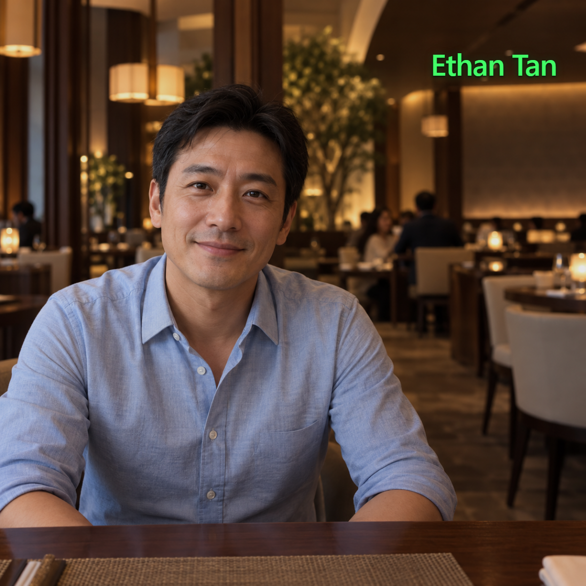
4.3.2 Replacing descriptions with concise icons
Even beside the guest's face, long descriptions require staff to read while listening. To support DR3, the display instead shows a name and up to two icons. DR6 requires preferences and allergy alerts to remain distinguishable. P1
Before · written description
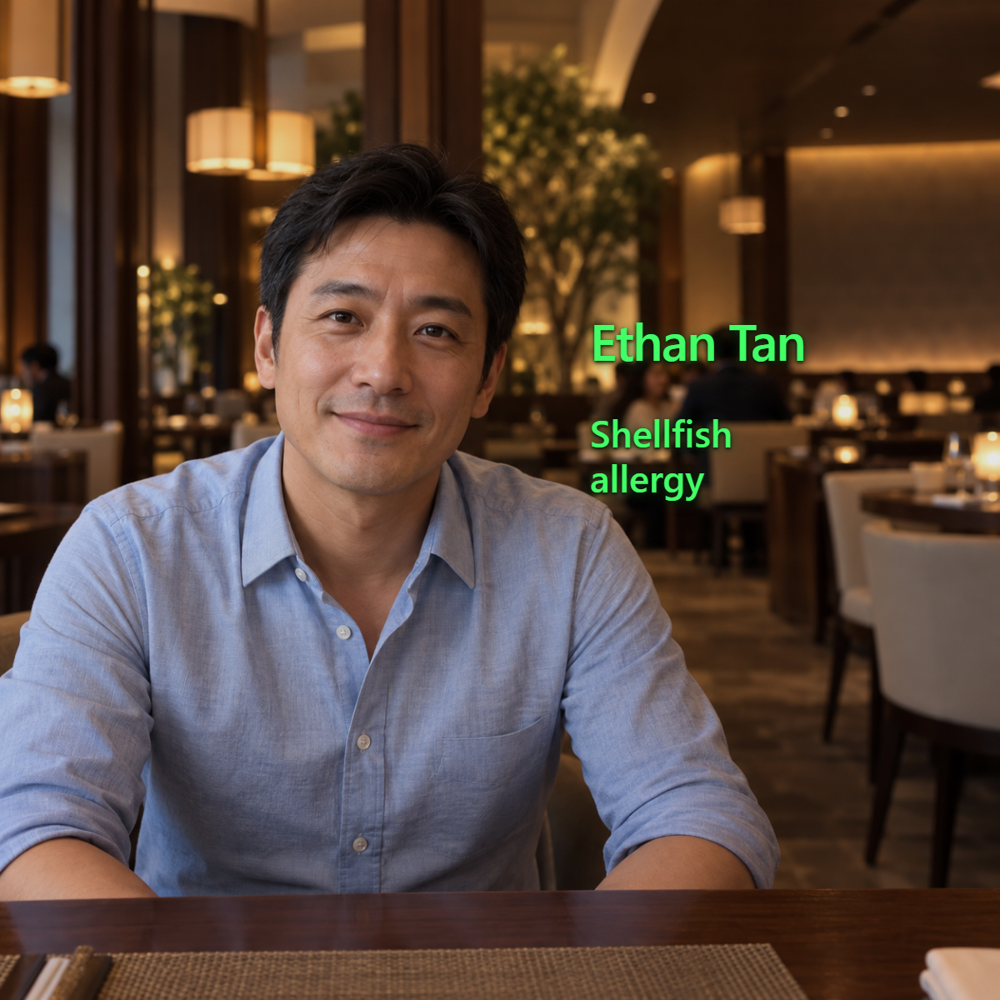
The main icon shows an item, such as coffee; its corner marker means preference (heart), dislike (crossed-out heart), or allergy alert (warning triangle). Icons appear beneath the name and are stored on the glasses, avoiding extra downloads. P3
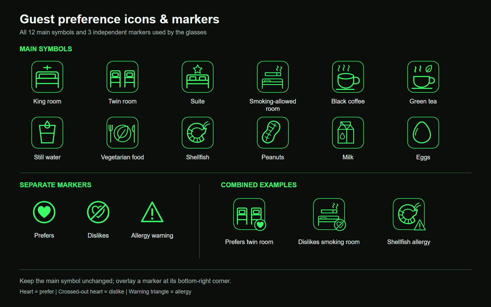
The prototype shows at most two icons, puts allergy alerts first, and hides personal details when a guest is unrecognised or the face association is lost. Automated checks verify placement and that names and icons disappear together. P11
Concise information follows display guidance, but short symbols can still distract. User testing must check whether people understand the icons without coaching and use them without interrupting conversation. R8, R9
4.3.3 Retrieving contextually relevant preferences
The next proposed iteration selects information to fit the moment. Face recognition determines whose record to retrieve; conversation and service context determine which details to show. Location, task, urgency, and validity could rank the candidates: during breakfast, for example, a checked drink preference should take precedence over an unrelated room arrangement.
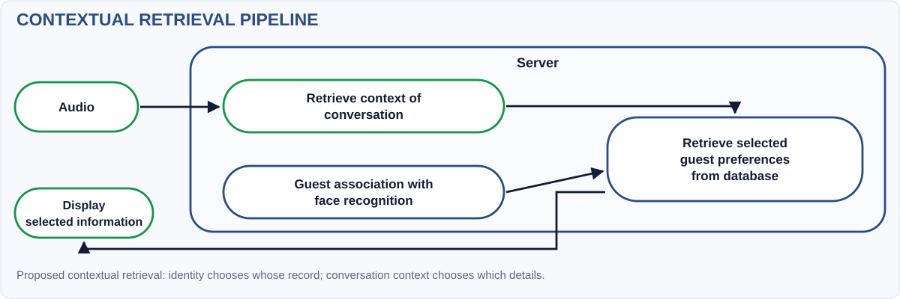
This addresses DR3 and DR6: an easily understood room icon can still be unhelpful during a drinks order. The proposed filter would select relevant, checked preferences from the shared record (DR4), while retaining priority for allergy alerts under the hotel's verification rules. P1
Before · unrelated room preferences
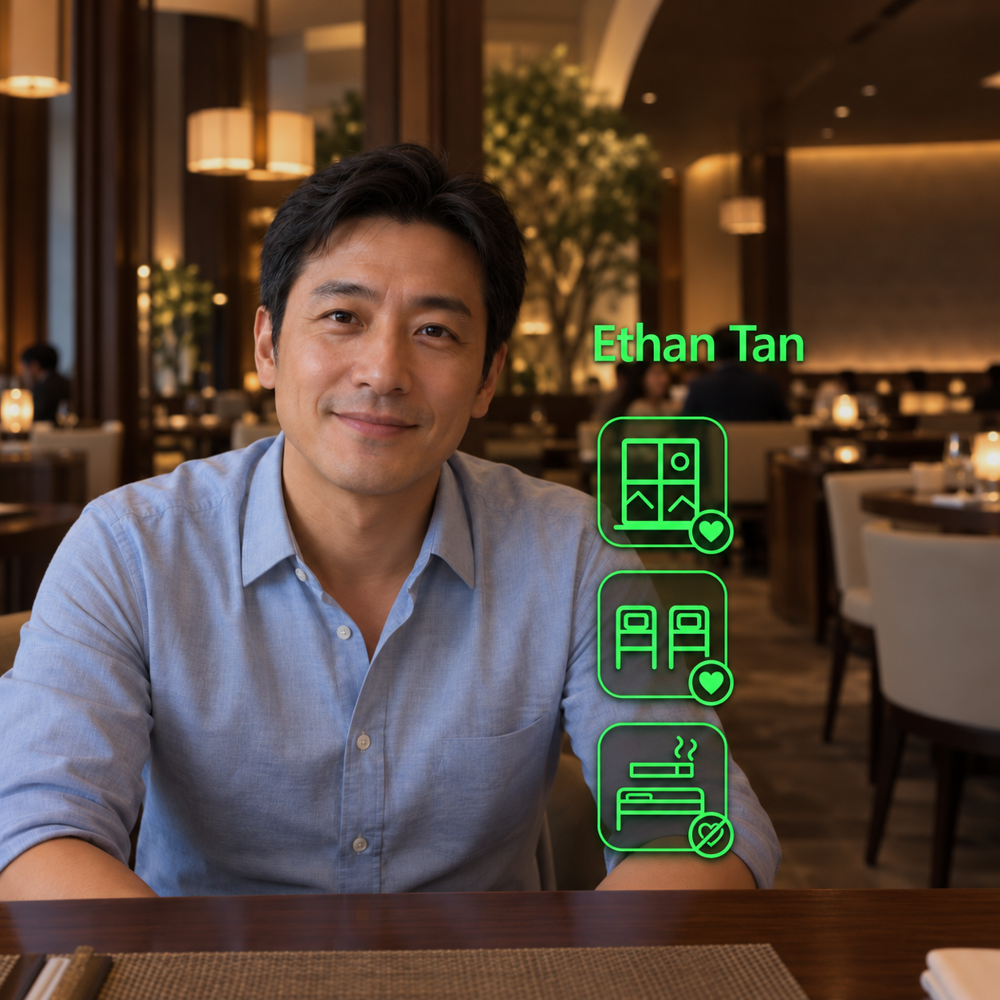
Proposed after · relevant drink preference
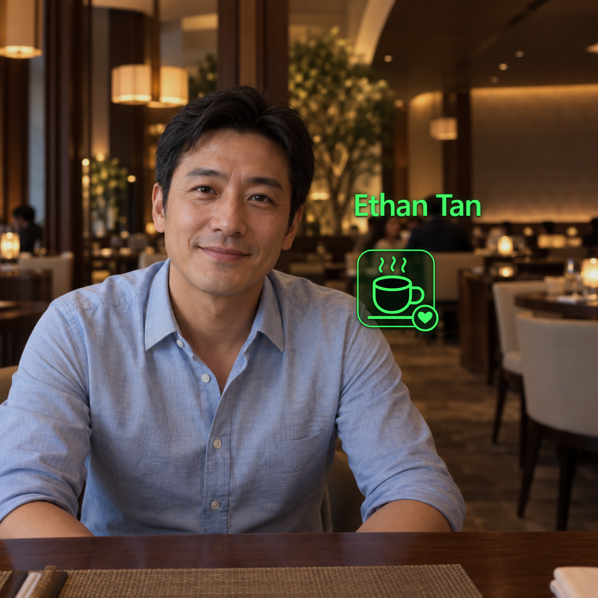
Current status. The prototype shows up to two stored reminders, with allergy alerts first. It does not yet interpret conversations to select preferences; microphone activity only controls how long the session runs. P3
Testing should compare the same scenarios with and without filtering: does the system identify the topic correctly, show useful information, or hide something staff need? This tests relevance as well as readability.
4.4 Complete system architecture
Figure 13 combines the iterations in the Rokid RV101 → Wi-Fi/HTTP → laptop → display architecture. Solid paths describe current functions; the dashed extension is planned. P10

Communication. The glasses send one recognition request at a time to avoid a queue of old images. Late results are ignored so outdated details are not displayed. A swipe checks the server connection. P3
Recognition. The server compares faces with stored references. A match needs at least 0.45 similarity and must beat the next candidate by 0.10. Lowering the minimum from 0.50 reduced unrecognised results but may admit wrong matches. These scores measure similarity, not confidence percentages. P3, P11
Shared records. The server loads guest profiles into memory at startup. This speeds lookup, but database edits require a restart before displayed information changes. DR4 therefore still needs reliable updates reaching another employee. Unique guest IDs should replace name-based lookup to distinguish guests with the same name. Incoming camera images are not saved; unrecognised guests receive no personal details.
The dashed extension would add audio upload, local Whisper transcription, Gemini extraction, and staff-reviewed database updates. These are not connected to the glasses workflow yet. The separate card-entry prototype is also not integrated. P6, P10
5. User validation and system evaluation
5.1 User validation
The team conducted a walkthrough and product testing with 10 non-hotel participants, examining activation, potential usefulness, and cue use. This formative work supports problem finding and prototyping, rather than proving improved hotel service. P1
| Walkthrough question | Reported finding | Design implication |
|---|---|---|
| Is starting capture/display easy? | All 10 described activation as easy. | Retain single-tap activation; test it during realistic staff tasks. |
| Could cues help serve guests? | 70% saw potential usefulness, but some icons were unrelated to the conversation. | Develop contextual retrieval and assess whether it enables a specific service action. |
| Can cues be used naturally? | Most described a quick glance as sufficient, but incorporating cues into conversation was challenging. | Test timing, meaning, and conversational flow together; investigate design changes as well as training. |
Understanding an icon and using it in conversation are different tasks. A participant may recognise a coffee preference but be unsure when to mention it. The feedback connects shorter icons (Section 4.3.2) with relevant selection (Section 4.3.3): staff need information that fits the current interaction.
This small non-staff study identifies improvements for the next prototype. It did not compare ordinary profile lookup or measure gaze and attention, so it cannot establish improved hotel service or reduced distraction.
5.2 Design requirements and whole-system testing
System testing covers tap → select guest → recognise face → retrieve stored profile → display information. The further step—turning a conversation into an approved update that helps another employee—remains incomplete. The assessment combines measured results, implementation checks, and user feedback against Chapter 2's requirements.
On 3 November, 13 live activations included quick repeat taps while capture was already running. Five produced a recognised name and icons in the app's drawing process; four also recorded an Android frame commit, confirming a completed frame was submitted for display. These four averaged 1,180 ms, median 1,198.5 ms, range 974–1,349 ms. P4
| Measured stage, four completed frames | Mean |
|---|---|
| Tap handled → selected image sent: camera, face selection, image preparation, scheduling | 693 ms |
| Request sent → server response read, including recognition | 302 ms |
| Response read → app draws name and icons | 101.3 ms |
| Drawing → Android confirms frame submitted | 83.8 ms |
| Total | 1,180 ms |
Server recognition took 177.5 ms within the 302 ms request stage; it is not an additional delay. The largest delay was before sending the image, so optimisation must address capture and selection as well as server speed. Another activation took 4,412 ms to draw information without a completed frame recorded before the next tap; eight had no accepted name/icon output before another tap. Repeat taps can interrupt processing, so these counts do not establish a success rate. Independent starts from idle and physical on-lens timing still need testing.
| Requirement | Current evidence | Assessment and next verification |
|---|---|---|
| DR1 · On-time support: 1.5 s p95 cue objective | Four successful warm commits averaged 1.18 s; this does not estimate p95, include cold starts, or include every interrupted attempt. | Not enough evidence to assess p95. Repeat independent cold/warm trials and count all failures. |
| DR2 · Low effort: single tap and automatic silence expiry | All 10 participants found activation easy; checks verify timeout and camera/microphone shutdown. | Early support. Test staff task interference and stopping behaviour in realistic noise. |
| DR3 · Glanceability: concise cues during conversation | Icons are implemented; 70% reported needing only a quick glance, but natural conversational use remained difficult. | Partially achieved. Compare comprehension, attention shifts, and conversational flow with a baseline. |
| DR4 · Preference continuity: approved update reaches another employee | Stored profiles are retrieved; new facts are not consistently extracted and profile changes require restart. | Incomplete. Test captured statement → review → updated record → next employee's action. |
| DR5 · Correct association: hide uncertain/outdated details | Tests check unrecognised guests, tracking changes, expired results, and cancellation. | Safeguards implemented; real-world error rates unknown. Count wrong guest details and missed matches in new, crowded test scenes. |
| DR6 · Appropriate information: relevant fields and distinct allergy handling | Two-cue limit and fictional allergy markers exist; irrelevant content was reported. | Partially achieved in demo data. Validate contextual selection, interpretation, permissions, and fallback. |
Retrieval and display work; the service benefit and complete handover still need evaluation. The photo benchmark and four live frame measurements cover different stages and must be reported separately.
5.3 Limitations and guest acceptance
A separate exploratory survey asked how comfortable respondents would be with hotels noting and storing preferences for better service. Ratings 4 and 5 account for 31.3% and 9.4%, giving 40.7% rating 4 or 5. Responses therefore do not establish majority acceptance. The recruitment method and denominator are not supplied, so this is exploratory feedback rather than a representative guest estimate. P1
Preference-storage comfort also does not establish acceptance of facial images, purchase-history processing, or recorded conversations. The next study should distinguish those activities, explain purpose and access, and allow guests to express different choices. A lounge access tap alone does not demonstrate permission for every proposed use. The PDPA and PDPC biometric guidance are reference points for review with the hotel and university; the latter concerns security applications rather than approving this hospitality workflow. R10
The implemented microphone currently detects activity locally, whereas the planned extension would introduce audio/transcript handling and an external model service. That change needs its own participant and data protocol. Face thresholds and track guards reduce particular failure paths but have not been evaluated for representative error rates. Fictional allergy icons likewise test presentation, not food safety. These limits define the next-stage study boundary; they do not negate the present prototype's value for discovering usability and integration problems.
5.4 Next development and validation steps
The next phase will improve extraction and relevance, compare the complete handover with ordinary profile lookup using hotel staff, and keep any LQA-related output evidence-linked and human-reviewed. Chapter 6 gives the phased work plan; Appendix B specifies the comparison protocol. P8
6. Limitations, responsible use, and next-stage plan
The strongest interim outcome is a tangible recognition-and-display prototype supported by component measurements and formative feedback. The complete capture → approved update → another employee's relevant service action has not yet been validated. Several implementation and study boundaries determine the next phase.
Data, identity, and safety. Recognition thresholds are not guarantees; suppress cues for uncertain matches. Save a new preference only after staff confirms its supporting words, guest/stay, scope, and validity. Allergy information must be checked against the authorised record and food-safety source; fictional icons are not evidence of safety.
Guest and employee control. Before real-person testing, obtain hotel and university review of purpose, notice and consent or other approved basis, access, correction, and retention. A lounge tap or preference survey does not itself authorise face or audio capture. R10, P2
LQA use. Keep outputs as evidence-linked suggestions for human review. The selected subset is not an overall grade or staff ranking. P8
The following is a proposed sequence for Semester 2, with weeks relative to its start; it is a work plan rather than a confirmed hotel booking.
| Window | Work package and deliverable | Decision or evidence required |
|---|---|---|
| Weeks 1–2 | Confirm one lounge service moment, staff roles, existing profile path, data permissions, and cue categories with the partner. | Agreed workflow map, baseline task, and participant/data protocol. |
| Weeks 2–4 | Build an extraction evaluation set with explicit preferences, questions, complaints, corrections, multiple speakers, and visual-only observations. | Versioned prompts/models; human-labelled facts; precision, recall, unsupported claims, and attribution errors. |
| Weeks 3–5 | Implement staff review/correction before profile writes and contextual retrieval for one F&B task. | Approved update reaches a second employee; irrelevant and superseded cues are withheld. |
| Weeks 4–6 | Test recognition on held-out images, ambiguous guests, track changes, and network failure; repeat independent cold/warm timing and longer battery trials. | Report every activation and failure, p50/p95 where supported, false reveals, starting charge, duration, and complete traces. |
| Weeks 6–8 | Run an approved formative pilot with approximately 6–8 hotel staff, subject to access, using counterbalanced phone and glasses tasks. | Correct guest/action, cue comprehension, task time, attention shifts, guest-perceived fit in staged encounters, and qualitative feedback. |
| Weeks 9–10 | Refine the most consequential failures; demonstrate the complete same-stay handover and report the comparison. | A traceable requirements check and a supported decision about continuing with the wearable. |
Proposed acceptance gates are zero observed wrong-profile reveals in the defined test set, source-supported approved preferences, reliable no-match fallback, and improved task performance without poorer comprehension or conversational flow. Zero observed errors would remain a bounded sample result. Final numerical targets and sample sizes should be agreed before testing. Deployment cost should subsequently include hardware, server/network resources, integration, charging, maintenance, and training; the current evidence is insufficient for a credible ROI estimate.
7. Team contributions
The team confirmed the following division, following the presentation split. This records the main areas of work without assigning undocumented individual ownership of particular experiments. P7
| Team member | Main area of contribution |
|---|---|
| Neha Rajan | Problem investigation and framing; hotel/business context, service quality, and the rationale for personalisation. |
| Nigel Yeo Tong Wei | Problem investigation and framing; current guest-information practices, first-time guest needs, and the design challenge. |
| Wong Weng Hong | Solution development; functional requirements, concept comparison, and the proposed staff/guest journey. |
| Tan Ping Hui | Solution development; technical implementation, prototype iterations, testing, and the next development steps. |
The interim contribution is an implemented service-support mechanism and a clearer account of what must be tested next. Whether the mechanism improves hotel service remains the central evaluation question for the next stage.
References and project evidence
R1. Lei, S. S. I., Wang, D., Fong, L. H. N., & Ye, S. (2024). “Recipe for perceived personalization in hotels.” Tourism Management, 100, 104818. Institutional publication record and abstract · DOI.
R2. Medallia Market Research (2024). Understanding Personalization Efforts in the Hospitality and Retail Industries. Original report. Vendor-produced U.S. guest survey.
R3. Piccoli, G., Lui, T.-W., & Grün, B. (2017). “The impact of IT-enabled customer service systems on service personalization, customer service perceptions, and hotel performance.” Tourism Management, 59, 349–362. Author-hosted article · DOI.
R4. LQA. Hotel assessments. Public description of its quality-assessment framework; accessed 10 November 2026.
R5. Oracle. OPERA Cloud 25.4: Profiles. Official product documentation; accessed 10 November 2026.
R6. hotelkit. Guest services. Vendor-described request assignment and complaint follow-up; accessed 10 November 2026.
R7. SoftServe. Hands-Free Face ID. Public AR identification demonstration; accessed 10 November 2026.
R8. Google. AI Glasses design principles. Official design guidance; accessed 10 November 2026.
R9. Lewis, J. E., & Neider, M. B. (2016). “Through the Google Glass: The impact of heads-up displays on visual attention.” Cognitive Research: Principles and Implications, 1, 13. Open-access article.
R10. Personal Data Protection Commission Singapore (2022). Guide on Responsible Use of Biometric Data in Security Applications. Scope: security applications. See also Personal Data Protection Act 2012, Singapore Statutes Online.
R11. Google. Face detection documentation. On-device detection and tracking, distinct from identity recognition; accessed 10 November 2026.
P1. Team IS-432 (5 November 2026). Interim presentation, 37 slides; presentation recording, 29 min 18 s; timestamped transcript. Slide numbers in this report refer to the supplied PDF.
P2. Project field records: Novotel formatted visit notes; PARKROYAL visit summary; later PARKROYAL discussion transcript and source caveats. These records have different evidence quality; formatted field notes are paraphrases.
P3. Rokid prototype implementation and validation notes; Android implementation; demo guest cue schema and rendering.
P4. Temple touch to displayed information, live RV101 series, 3 November 2026. This is the source for the four frame-commit observations and their timing boundaries.
P5. Server versus on-device photo-recognition benchmark and retrieval-mode and battery replay comparisons, 2 November 2026.
P6. Local POC scaffold; interactive proposed architecture; project framing. Architecture status remains proposed.
P7. Team clarifications, 10–11 November 2026: the 20-minute battery test was verified; no local raw file is available. Neha/Nigel mainly addressed the problem; Weng Hong/Ping Hui the solution. Battery life motivated temple touch; user feedback/validation preceded face-relative placement and central selection.
P8. Current selected 15-item F&B table · PDF preview · checker evidence and evaluation guidance. The current table supersedes earlier candidate-list numbering.
P9. CDE4301 interim assessment brief and rubric. Four-person group: 6,000-word limit excluding appendices; individual areas of work must be identified.
P10. Full Rokid system architecture · scalable SVG. Adapted from rokid/output/architecture/rokid-system-architecture.svg: local detector label generalised; architecture unchanged. The dashed audio-preference extension remains planned.

P11. Implementation-level checks: Android unit tests for session, focus, tracking, and image buffers; device tests for microphone/VAD, request deadlines, and cue rendering; server recognition, API, and guest-cue tests. Test presence describes verification coverage; recorded execution results are attributed to P3.
P12. Generated prototype UI illustrations, reproduced unchanged: position, content, and context before/after pairs. Pipeline diagrams redraw the supplied presentation's flows; contextual filtering remains proposed.
P13. Team-supplied “Note worker testing” summary, provided 11 November 2026. Transcribed method and reported findings. Synthetic text-only evaluation; raw model runs are not supplied.
Appendix A. Evidence reconciliation
This appendix records differences between presentation summaries and the narrower evidence retained in the repository. It makes the report's interpretation reproducible without changing the supplied slides or recording.
| Presentation statement | Treatment in this report |
|---|---|
| Slide 23 shows a <1 s cue target; the speaker script says 1.5 s | Treat the scripted value as a proposed engineering ceiling and specify p95 for evaluation; it is not an LQA rule. Reconcile the slide before reusing it. Four successful warm frame commits averaging 1.18 s do not establish p95, include cold starts, or measure physical lens visibility. |
| Slide 27: 67% “power reduction,” traffic 705 → 170, battery 28% → 9% | Included as a team-confirmed 20-minute test. The directly reported quantity is battery-level depletion. The relative reduction calculated from the rounded values is 67.9%; electrical energy and average power were not measured. |
| Slide 28: 30% faster, 1.69 → 1.18 s, average over 15 runs | Kept separate from documented protocols. The reproducible 15-probe photo test measured 1.9279 → 1.3506 s, also approximately 30% faster. The 1.18 s figure is supported by four successful warm frame commits in a different live series; a paired 15-run touch-to-display comparison is not archived. |
| Slide 28: three local extraction models | Timing retained from the presentation; P13 adds the text-only protocol, JSON checks, six targeted staff labels, three guest facts, and reported errors. These are exploratory summaries, not broad accuracy estimates or a complete LQA score. |
| Slides 33–34: 70% usefulness / quick glance | Attributed to the team's 10-person non-staff walkthrough. The two questions are not treated as interchangeable objective performance measures. |
| Slide 35: >40% willingness, “rated >4/5,” extended to facial images and purchase history | The displayed preference-storage chart has 31.3% at 4 and 9.4% at 5: 40.7% rated 4 or 5, while only 9.4% rated above 4. The displayed question does not establish willingness to share facial images, purchase histories, or recorded conversations. Recruitment and denominator are not given. |
| Slide 19: first-time guests have “no information” | Narrowed to limited prior-stay history. Pre-arrival and same-stay information can already exist. |
| Slide 11 / speech: loyalty membership treated as returning-guest share | No retention estimate is derived from membership. Membership and a completed repeat stay are different measures. |
| Slides 7–8: LQA and classification | Used as a quality/service framework. LQA assessment is not treated as the authority assigning hotel star classification. |
| Demonstration describes “eye contact” | Described technically as a centred face/head-direction proxy. The current prototype has no eye tracker. |
Appendix B. Reproducible next-stage evaluation
Staged service comparison. Recruit an approved formative staff sample, record role and relevant experience, and use synthetic profiles with consenting role-play guests. Counterbalance phone and glasses conditions and scenario order. Give both conditions the same guest context and equal practice. Include a relevant drink preference, an unrelated room preference, a corrected preference, an unknown guest, two nearby enrolled guests, a fictional allergy alert, and a disconnected-server case.
For each trial, record activation, first correctly rendered cue, correct interpretation, chosen service action, interruptions/attention shifts, assistance, and completion. Count all attempts, including no-result cases. Ask the role-play guest whether the action fitted the stated need. Use an observer and a fixed rubric; separate interpretation errors from wrong guest association and model extraction failures. Report participant-level results and uncertainty rather than treating repeated trials from one wearer as independent users.
Extraction evaluation. Define reference facts before comparing models. Two reviewers should identify the speaker, explicit statement, current-stay/enduring scope, and whether a preference is actually supported. Include negation, corrections, ambiguity, requests, complaints, and visual-only evidence. Report true supported facts, missed facts, unsupported facts, attribution errors, and processing time. Compare transcript-only and multimodal approaches on identical cases and retain model version, prompts, parameters, input hashes, and reviewed outputs.
Battery and latency evaluation. Repeat balanced conditions from comparable charge levels with the same brightness, network, gallery, capture policy, and workload. Include camera, microphone/VAD, inference, transfer, and display. Measure trigger-to-first-visible-cue latency across all attempts; report p50 and p95 only with enough independent observations, separate cold starts from warm retaps, and count misses, cancellations, and interruptions. Distinguish wall-clock duration, active time, traffic, battery percentage points, and measured energy. Software frame submission does not prove physical lens presentation.
Appendix C. Recording and supporting material
- Read and search the timestamped transcript.
- Download the transcript as Markdown, plain text, or WebVTT captions.
- View the original slide deck and recording.
- Read the fuller project research synthesis.
The transcript is machine-generated with terminology checks and uncertainty notes; it is not a certified verbatim or speaker-diarised record. Spoken claims are preserved as speech and do not acquire verified status merely by appearing in the transcript. The recording ends just as Q&A begins, so it does not contain a complete question-and-answer session.